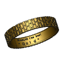

Draft ShapeString tutorial/cs
| Topic |
|---|
| Product design |
| Level |
| Beginner |
| Time to complete |
| 30 minutes |
| Authors |
| r-frank, vocx and CBoge |
| FreeCAD version |
| 1.1 and above |
| Example files |
| None |
| See also |
| None |
Introduction
This tutorial has been re-worked for FreeCAD v1.1, but it should be possible to follow the steps for v1.0 as well.
This tutorial describes a method to create 3D text and use it with solid objects in the  Part Workbench. We will discuss how to:
Part Workbench. We will discuss how to:
- insert outlined text with the Draft ShapeString tool,
- position it on geometry using
 Part EditAttachment,
Part EditAttachment, - extrude it to be a 3D solid with
 Part Extrude, then finally
Part Extrude, then finally - engrave the text by applying a boolean
 Part Cut.
Part Cut.
{kind=link}
To use ShapeStrings inside the  PartDesign Workbench, the process is essentially the same as with the Part Workbench, but the ShapeString must be placed inside the PartDesign Body. Go to the end of this tutorial for more information.
PartDesign Workbench, the process is essentially the same as with the Part Workbench, but the ShapeString must be placed inside the PartDesign Body. Go to the end of this tutorial for more information.
{kind=link}
Final model of the engraved text.
Setup
1. Open FreeCAD and create a new empty document with File →  New Document.
New Document.
- 1.1. Switch to the Part Workbench either with View → Workbench →
 Part Workbench, or with the Workbench Selector .
Part Workbench, or with the Workbench Selector . - 1.2. Press the
 Isometric button, or press 0 in the numerical pad of your keyboard, to change the view to isometric to visualize the 3D solids better.
Isometric button, or press 0 in the numerical pad of your keyboard, to change the view to isometric to visualize the 3D solids better. - 1.3. Whenever you add objects, press the
 Fit All button, or its hotkey V, F. This will pan and zoom the 3D View so that all elements are visible in the view.
Fit All button, or its hotkey V, F. This will pan and zoom the 3D View so that all elements are visible in the view. - 1.4. Hold Ctrl while you click to select multiple items. If you make a wrong selected or want to de-select everything, just click in an empty area in the 3D View.
{kind=link}
Create the basic shape
2. Create a rectangular box:
- 2.1. Insert a primitive cube by clicking on
 Cube.
Cube. - 2.2. Select the created
Cubein the Tree View. - 2.3. On the Data tab of the Property View:
- 2.3.1. Change Width to
31 mm.
- 2.3.1. Change Width to
- 2.4. Re-center the view per step 1.3.
3. Create a chamfer:
- 3.1. Select the upper edge (
Edge6) of the elongated face of theCubein the 3D View. - 3.2. Press Chamfer.
- 3.3. In the Chamfer Edges task panel:
- 3.3.1. Verify that Select edges is selected and that the Chamfer type is
Equal distance. - 3.3.2. Change Length to
5 mm. - 3.3.3. Press OK. This will create a
Chamferobject.
- 3.3.1. Verify that Select edges is selected and that the Chamfer type is
{kind=link}
{kind=link}
Base object created from an edited cube and a chamfer operation.
Insert the ShapeString
4. Create the ShapeString:
- 4.1. Switch to the Draft Workbench.
- 4.2. Click on Shape From Text.
- 4.3. In the ShapeString task panel:
- 4.3.1. Change Text to
FreeCAD. - 4.3.2. Change Height to
5 mm. - 4.3.3. Make sure Font file points to a valid font, (e.g,
/usr/share/fonts/truetype/dejavu/DejaVuSans.ttforC:/Windows/Fonts/arial.ttf).- Note: for more details about working with fonts please refer to the Draft ShapeString page.
- 4.3.4. Reset its location to the origin by pressing Reset Point.
- 4.3.5. Press OK. This will create a
ShapeStringobject.
- 4.3.1. Change Text to
- 4.4. In the Tree View, select
Chamfer. On the View tab, change the value of Visibility tofalse, or press Space on the keyboard. This will hide theChamferobject, so you can see theShapeStringbetter. - 4.5. To see the ShapeString from above change the view by pressing
 Top, or 2 on the keyboard.
Top, or 2 on the keyboard. - 4.6. To restore the view to isometric, press Isometric, or 0 on the keyboard.
- 4.7. Reverse step 4.4 to make the
Chamferobject visible again.
{kind=link}
Text created as a ShapeString, that is, a filled compound shape on a plane
5. Move the ShapeString to the Chamfer:
- 5.1. Make sure both the
Chamferobject and theShapeStringobject are visible in the 3D View. If one is not, select it in the Tree View and press Space on the keyboard. - 5.2. Switch to the Part Workbench.
- 5.3. In the Tree View, select
ShapeString. - 5.4. Select Part → Attachment.
- 5.5. In the 3D View, select the chamfered face of the
Chamfer. - 5.6. In the Attachment task panel:
- 5.6.1 Change the Attachment mode to
Inertia 2-3. - 5.6.2 Press OK.
- 5.6.1 Change the Attachment mode to
- 5.8. Make sure
Shapestringis selected in the Tree View. - 5.9. On the Data tab of the Property View:
- 5.9.1. Change Justification to
Middle-Center. - 5.9.2. Expand the Attachment Offset property node and change Angle to
90.0 °.
- 5.9.1. Change Justification to
{kind=link}
The ShapeString centered on the chamfered face
Create the engraved text
6. Create a solid object from the ShapeString:
- 6.1. Make sure the Part Workbench is still active.
- 6.2. In the Tree View, select
ShapeString, then press Extrude. - 6.3. In the Extrude task panel:
- 6.3.1. In the Direction section select
Along normal - 6.3.2. In the Length section set Along to
0 mmand Against to1 mm. - 6.3.3. Check the Create solid option.
- 6.3.4. Press OK. This will create an
Extrudeobject.
- 6.3.1. In the Direction section select
- 6.4. Since it has been extruded into the
Chamferobject, the 3D View will look the same as before. Verify the creation of a solid 3D object by temporarily making theChamferobject invisible:- 6.4.1. In Tree View, select
Chamfer. - 6.4.2. Press Space to hide it. You should see a solid 3D object in the shape of the word "FreeCAD".
- 6.4.3. Press Space to make the Chamfer visible again.
- 6.4.1. In Tree View, select
{kind=link}
The 3D text after making the Chamfer object invisible.
7. Engrave the text on the geometry:
Final model: a chamfered cube, with engraved text created from ShapeString, Extrude, and boolean Cut operations.
Engraving 3D text with the PartDesign Workbench
A similar process as described above can be done with the PartDesign Workbench.
- Create the Draft ShapeString first.
- Create a
 PartDesign Body, make it active, and create a base solid by adding a primitive, or by extruding a sketch with PartDesign Pad.
PartDesign Body, make it active, and create a base solid by adding a primitive, or by extruding a sketch with PartDesign Pad. - Move the
ShapeStringobject into the active body. - Attach the
ShapeStringobject to one of the faces of the solid, or to an edge of the sketch, using Part EditAttachment. - Now create a PartDesign Pad or a PartDesign Pocket from the
ShapeString, in order to produce an additive or a subtractive feature respectively.
{kind=link}
{kind=link}
See the forum thread How to use ShapeStrings in PartDesign.
Notes
- To create curved text you can use

Macro FCCircularText. - To import text from an SVG file look at the Import text and geometry from Inkscape tutorial.
{kind=link}
- Creation and modification: New Sketch, Extrude, Revolve, Mirror, Scale, Fillet, Chamfer, Face From Wires, Ruled Surface, Loft, Sweep, Section, Cross-Sections, 3D Offset, 2D Offset, Thickness, Project on Surface, Appearance per Face
- Boolean: Compound, Explode Compound, Compound Filter, Boolean Operation, Cut, Union, Intersection, Connect Shapes, Embed Shapes, Cutout Shape, Boolean Fragments, Slice Apart, Slice to Compound, Boolean XOR, Check Geometry, Defeaturing
- Other tools: Box Selection, Shape From Mesh, Points From Shape, Convert to Solid, Reverse Shapes, Simple Copy, Transformed Copy, Shape Element Copy, Refine Shape, Set Tolerance, Persistent Section Cut, Attachment
- Preferences: Preferences, Fine tuning
- Helper tools: New Body, New Sketch, Attach Sketch, Edit Sketch, Validate Sketch, Check Geometry, Sub-Shape Binder, Clone
- Modeling tools:
- Additive tools: Pad, Revolution, Additive Loft, Additive Pipe, Additive Helix, Additive Box, Additive Cylinder, Additive Sphere, Additive Cone, Additive Ellipsoid, Additive Torus, Additive Prism, Additive Wedge
- Subtractive tools: Pocket, Hole, Groove, Subtractive Loft, Subtractive Pipe, Subtractive Helix, Subtractive Box, Subtractive Cylinder, Subtractive Sphere, Subtractive Cone, Subtractive Ellipsoid, Subtractive Torus, Subtractive Prism, Subtractive Wedge
- Boolean: Boolean Operation
- Dress-up tools: Fillet, Chamfer, Draft, Thickness
- Transformation tools: Mirror, Linear Pattern, Polar Pattern, Multi-Transform, Scale
- Additional tools: Shape Binder, Involute Gear, Sprocket, Shaft Design Wizard
- Context menu: Suppressed, Set Tip, Move Object To…, Move Feature After…
- Preferences: Preferences, Fine tuning
- General: New Sketch, Edit Sketch, Attach Sketch, Reorient Sketch, Validate Sketch, Merge Sketches, Mirror Sketch, Leave Sketch, Align View to Sketch, Toggle Section View, Stop Operation, Grid, Snap, Rendering Order
- Geometries: Point, Polyline, Line, Arc From Center, Arc From 3 Points, Elliptical Arc, Hyperbolic Arc, Parabolic Arc, Circle From Center, Circle From 3 Points, Ellipse From Center, Ellipse From 3 Points, Rectangle, Centered Rectangle, Rounded Rectangle, Triangle, Square, Pentagon, Hexagon, Heptagon, Octagon, Polygon, Slot, Arc Slot, B-Spline, Periodic B-Spline, B-Spline From Knots, Periodic B-Spline From Knots, Toggle Construction Geometry
- Constraints:
- Dimensional Constraints: Dimension, Horizontal Dimension, Vertical Dimension, Distance Dimension, Radius/Diameter Dimension, Radius Dimension, Diameter Dimension, Angle Dimension, Lock Position
- Geometric Constraints: Coincident Constraint (Unified), Coincident Constraint, Point-On-Object Constraint, Horizontal/Vertical Constraint, Horizontal Constraint, Vertical Constraint, Parallel Constraint, Perpendicular Constraint, Tangent/Collinear Constraint, Equal Constraint, Symmetric Constraint, Block Constraint, Refraction Constraint
- Constraint Tools: Toggle Driving/Reference Constraints, Toggle Constraints
- Sketcher Tools: Fillet, Chamfer, Trim Edge, Split Edge, Extend Edge, External Projection, External Intersection, Carbon Copy, Select Origin, Select Horizontal Axis, Select Vertical Axis, Move/Array Transform, Rotate/Polar Transform, Scale, Offset, Mirror, Remove Axes Alignment, Delete All Geometry, Delete All Constraints, Copy Elements, Cut Elements, Paste Elements
- B-Spline Tools: Geometry to B-Spline, Increase B-Spline Degree, Decrease B-Spline Degree, Increase Knot Multiplicity, Decrease Knot Multiplicity, Insert Knot, Join Curves
- Visual Helpers: Select Under-Constrained Elements, Select Associated Constraints, Select Associated Geometry, Select Redundant Constraints, Select Conflicting Constraints, Toggle Circular Helper for Arcs, Toggle B-Spline Degree, Toggle B-Spline Control Polygon, Toggle B-Spline Curvature Comb, Toggle B-Spline Knot Multiplicity, Toggle B-Spline Control Point Weight, Toggle Internal Geometry, Switch Virtual Space
- Additional: Sketcher Dialog, Preferences, Sketcher scripting
- Getting started
- Installation: Download, Windows, Linux, Mac, Additional components, Docker, AppImage, Ubuntu Snap
- Basics: About FreeCAD, Interface, Mouse navigation, Selection methods, Object name, Preferences, Workbenches, Document structure, Properties, Help FreeCAD, Donate
- Help: Tutorials, Video tutorials
- Workbenches: Std Base, Assembly, BIM, CAM, Draft, FEM, Inspection, Material, Mesh, OpenSCAD, Part, PartDesign, Points, Reverse Engineering, Robot, Sketcher, Spreadsheet, Surface, TechDraw, Test Framework
- Hubs: User hub, Power users hub, Developer hub